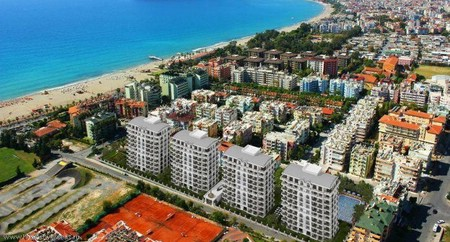
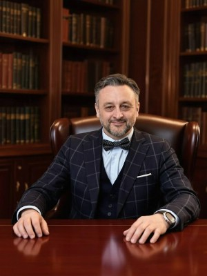
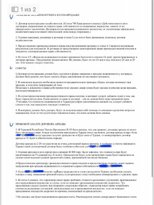
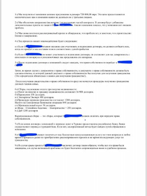

Приобретение недвижимости в Турции, будь то уютная квартира в Алании или вилла с видом на море в Анталье, — это выгодная инвестиция и исполнение мечты. Однако законодательство другой страны, языковой барьер и специфика местного рынка могут превратить этот процесс в сложную задачу. Чтобы сделка прошла безопасно, а ваши интересы были полностью защищены, необходимо профессиональное юридическое сопровождение на всех этапах.
Наша задача — взять на себя всю юридическую рутину и гарантировать чистоту вашей сделки.
Для облегчения Вашего выбора мы предлагаем Вам помощь опытных русскоязычных адвокатов и агентов по недвижимости в Турции. При этом Вам не обязательно никуда выезжать, Вы можете встретиться с адвокатом в Москве, либо по видеоконференции и поручить ему быть вашим представителем по подбору или приобретению необходимой недвижимости, дальнейшего сопровождения сделки, оформления ВНЖ, гражданства.

Юридическое сопровождение
приобретения недвижимости в Турции
заявка на WhatsApp
Адвокаты по недвижимости в Турции окажут следующие услуги:
-
проконсультируют Вас о порядке пребывания в Турции и получения ВНЖ
-
помогут с оформлением банковского счета и «икамета» (ВНЖ)
-
расскажут о подходящих способах приобретения жилья именно для Вас
-
сопроводят сделку под ключ и оформят ее без риска для Вас
При ознакомлении с недвижимостью Турции:
-
мы можем сопроводить или обеспечить трансфер с аэропорта
-
поможем с размещением на период пребывания в Турции
-
ознакомим со всеми вариантами новых застроек
Уважаемые клиенты !
Если Вы еще не решились приобрести жилье в Антальи или Аланьи, то Вы можете приехать на ознакомительный тур для просмотра вариантов подбора. Наши партнеры в Турции встретят Вас и сопроводят по всем интересующим объектам.
Встретят Вас и расскажут о порядке получения гражданства или ВНЖ в Турции, порядке оформления недвижимости, обезопасят Вас от рисков.
Вы спросите – почему я могу доверять Вам? Мы ответим - потому что Вами будет заниматься адвокат со статусом из России, который несет персональную ответственность за свои действия и знает что необходимо соотечественнику.
Наши адвокаты имеют богатый опыт общения с представителями недвижимости в Турции, как с застройщиками (девелоперами), так с турецкими агентами недвижимости и адвокатами.
Мы работаем во всех ключевых регионах страны — от Стамбула до побережья Средиземного моря (Анталья, Аланья), обеспечивая одинаково высокий уровень сервиса.


Приобретая недвижимость в Турции:
-
Вы становитесь желанным гостем в Турецкой Республике;
-
Приобретаете свою мечту о теплой стране с 300 солнечных дней в году;
-
Получаете комфортный отдых и досуг;
-
Получите возможность приобретения гражданства Турции;
-
Сможете вести свой бизнес удаленно;
-
Осуществите инвестиции в выгодные области;
-
Получите пассивный доход от сдачи в наем жилья;
-
Получите качественную медицину
Проверка объектов недвижимости
в Турции перед покупкой
заявка на WhatsApp
Выберите необходимую услугу по недвижимости в Турции:
Консультация по недвижимости Турции
Подбор недвижимости в Турции
Проверка документов по сделке
Сопровождение сделки под ключ
Вопросы ВНЖ и гражданства
Помощь в переводе капиталла в Турцию
В чем наши преимущества?
-
За Ваше сопровождение возьмутся профессиональные адвокаты из России и Турции
-
Знание рынка и особенностей законодательства Турции.
-
Знание русского и турецкого языков, менталитета и культуры стран.
-
Поможем подобрать жилье без выезда в Турцию (возможен он-лайн просмотр).
-
Мы сотрудничаем напрямую только с проверенными и авторитетными партнерами.
-
Отзывы наших клиентов говорят за нас.
-
С нами Вы избегаете любых рисков.
Вашему вниманию наши успешные кейсы
Правовое заключение по приобретению недвижимости
По заказу нашего клиента, наши адвокаты произвели полный анализ объекта недвижимости, предназначеного к приобретению. В резульатте, мы выявили множество рисков и завышенную цену, которая по рынку не отражала действительность. В итоге, наш доверитель отказался от сделки и сохранил свои средства.




Наши предложения по недвижимости Турции
Купить квартиру в Анталии Купить квартиру в АланьеПроекты с нашими партнерами в Турции
Татьяна Гюнеш о том, стоит ли покупать недвижимость в Турции